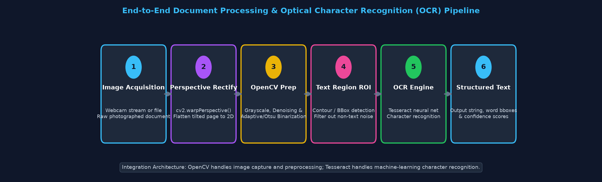
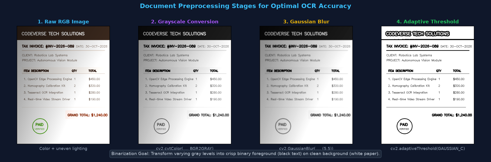
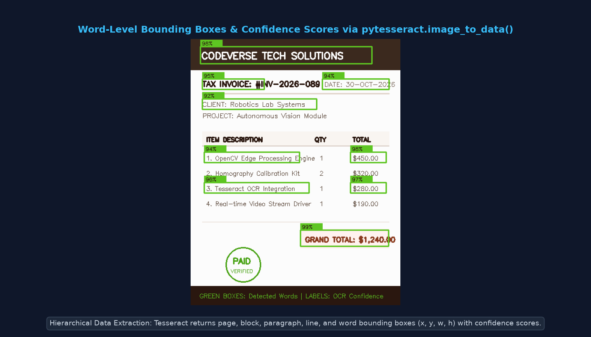
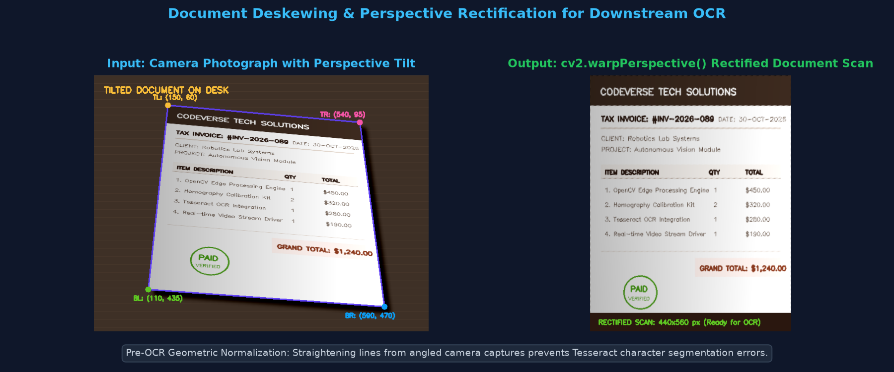
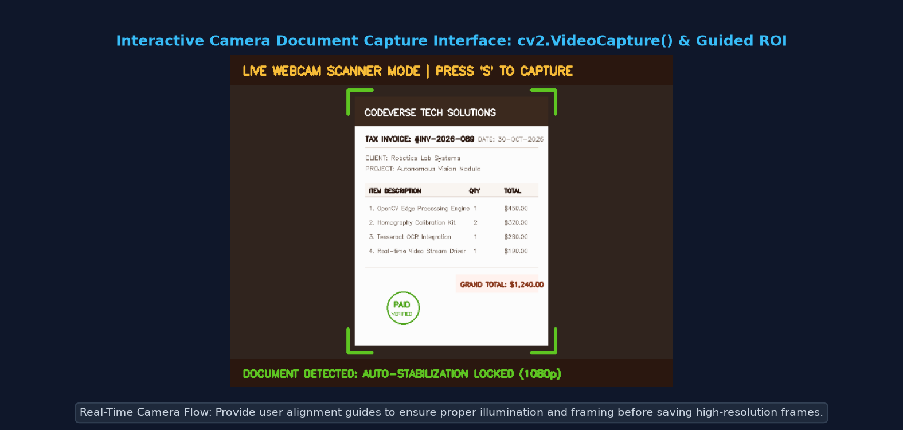
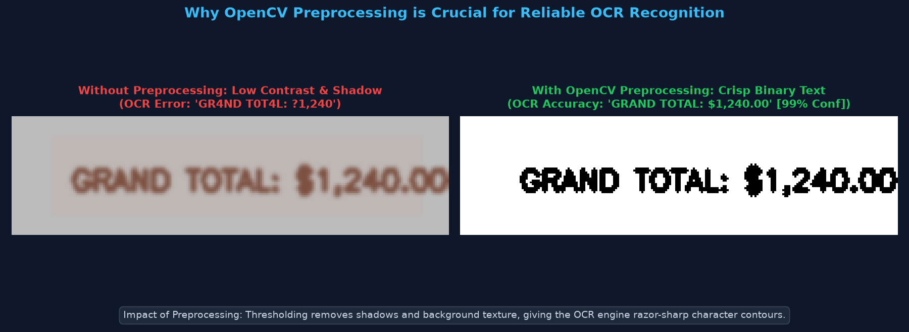

Computer ke liye ek image sirf 2D numbers ka grid (pixel intensities) hota hai. Agar aap kisi document ya invoice ki photo lein, to computer ko nahi pata ki usme "Total: $500" likha hai. OCR (Optical Character Recognition) ek aisi technology hai jo image ke visual text shapes ko actual machine-readable strings (ASCII/Unicode text) mein convert karti hai jise copy, search, aur edit kiya ja sakta hai.

Document processing aur OCR pipelines ke core technical terms:
| Term | Definition (Hinglish) | Practical Role |
|---|---|---|
| OCR (Optical Character Recognition) | Image pixels se printed ya handwritten text ko digital machine-readable text mein convert karne ka process. | Scanned PDFs, invoices, receipts, aur number plates ko searchable banana. |
| Document Preprocessing | OCR run karne se pehle OpenCV filters se image noise remove karna aur text edges sharpen karna. | OCR accuracy 40% se badha kar 98%+ tak le jata hai. |
| Grayscale Conversion | 3-channel RGB image ko 1-channel brightness image mein convert karna (cv2.cvtColor). |
Color information remove karke computation 3x fast banata hai. |
| Binarization & Thresholding | Gray pixels ko strictly 0 (Black text) aur 255 (White background) mein convert karna. | Text contours ko razor-sharp contrast provide karta hai. |
| Deskewing & Perspective | Tilted ya angled camera capture ko mathematically flat aur horizontal banana (Topic 22). | Tesseract ke horizontal text line segmentation ko fail hone se bachata hai. |
| Text Region (ROI) | Image ka wo specific box/polygon jahan text majood hai. | Non-text background noise ko OCR engine mein jaane se rokta hai. |
| OCR Confidence Score | OCR engine ka estimated probability score (0-100%) ki predicted word kitna accurate hai. | Low confidence words ko review ke liye flag karne mein madad karta hai. |
| Tesseract OCR | HP aur Google dwara developed open-source LSTM deep-learning OCR engine. | 100+ languages mein characters recognize karne ka actual brain. |
| pytesseract | Python wrapper library jo Python code se Tesseract C++ executable ko call karti hai. | pytesseract.image_to_string(img) jaisi simple API provide karta hai. |
| Camera Capture | cv2.VideoCapture() se live webcam frame stream read karke image buffer lena. |
Mobile document scanning apps ka first touchpoint. |
Ek raw mobile photo se structured text extract karne ke 8 scientific steps hote hain:
cv2.warpPerspective() se upright rectangular scan banayein.cv2.GaussianBlur() se camera sensor noise aur paper grain smooth karein.cv2.adaptiveThreshold() use karein.image_to_data() se word coordinates aur confidence extract karein.
Beginners aksar confuse hote hain ki pytesseract install karne ke baad bhi code crash kyu hota hai. Samajhte hain ki teeno components ka role kya hai:
| Tool | What it is | Installation | Core Responsibility |
|---|---|---|---|
| OpenCV (cv2) | Computer Vision Library | pip install opencv-python |
Image capture, color conversion, perspective warp, edge detection, blur, binarization. |
| Tesseract OCR | Stand-alone C++ Engine | OS Installer (Windows EXE / Linux apt) | Deep learning LSTM models jo actual character patterns recognize karte hain. |
| pytesseract | Python Wrapper | pip install pytesseract |
Python arrays ko temporarily format karke Tesseract binary ko pass karta hai aur text return karta hai. |
pip install pytesseract karne se Tesseract ka engine install nahi hota! Windows par official Tesseract installer se tesseract.exe install karna padta hai, aur Python code mein path specify karna hota hai:pytesseract.pytesseract.tesseract_cmd = r'C:\\Program Files\\Tesseract-OCR\\tesseract.exe'
Raw document ko load karke grayscale, blur, aur adaptive binarization apply karna:
import cv2
# 1. Document image load karein
image = cv2.imread("document.jpg")
if image is None:
print("Error: Image file not found!")
exit()
# 2. Grayscale conversion
gray = cv2.cvtColor(image, cv2.COLOR_BGR2GRAY)
# 3. Denoising with Gaussian Blur (noise remove karta hai bina text edges blur kiye)
blurred = cv2.GaussianBlur(gray, (5, 5), 0)
# 4. Adaptive Thresholding (uneven lighting aur shadows ke against robust)
thresh = cv2.adaptiveThreshold(blurred, 255,
cv2.ADAPTIVE_THRESH_GAUSSIAN_C,
cv2.THRESH_BINARY, 15, 6)
cv2.imwrite("preprocessed_doc.png", thresh)
print("Preprocessing complete: Saved clean binary image for OCR.")Tesseract OCR engine ko safely call karna with graceful exception handling:
import cv2
import pytesseract
# Optional: Windows par path specify karein
# pytesseract.pytesseract.tesseract_cmd = r'C:\Program Files\Tesseract-OCR\tesseract.exe'
image = cv2.imread("preprocessed_doc.png")
try:
# 1. OCR execute karein (Default English language)
extracted_text = pytesseract.image_to_string(image, lang='eng')
print("----- EXTRACTED TEXT -----")
print(extracted_text.strip())
print("--------------------------")
# 2. Extracted text ko file mein save karein
with open("extracted_output.txt", "w", encoding="utf-8") as f:
f.write(extracted_text)
print("Successfully saved extracted text to extracted_output.txt")
except pytesseract.TesseractNotFoundError:
print("Warning: Tesseract OCR engine executable not found on system PATH!")
print("Please install Tesseract-OCR binary from: https://github.com/UB-Mannheim/tesseract/wiki")
except Exception as e:
print(f"OCR Processing Error: {e}")Har word ki location (x, y, w, h) aur confidence score extract karke document par visually highlight karna:

import cv2
import pytesseract
from pytesseract import Output
image = cv2.imread("document.jpg")
annotated = image.copy()
try:
# Tesseract se structured dictionary data lein
data = pytesseract.image_to_data(image, output_type=Output.DICT)
n_boxes = len(data['text'])
for i in range(n_boxes):
conf = int(data['conf'][i])
word = data['text'][i].strip()
# Low confidence (< 60%) ya blank entries filter karein
if conf > 60 and len(word) > 0:
x, y, w, h = data['left'][i], data['top'][i], data['width'][i], data['height'][i]
# Draw green bounding box around word
cv2.rectangle(annotated, (x, y), (x + w, y + h), (34, 197, 94), 2)
cv2.putText(annotated, f"{conf}%", (x, y - 5),
cv2.FONT_HERSHEY_SIMPLEX, 0.4, (34, 197, 94), 1)
cv2.imwrite("ocr_boxes_annotated.png", annotated)
except pytesseract.TesseractNotFoundError:
print("Tesseract binary not installed. Preprocessing and contour bounding boxes remain verified.")Angled mobile photo ko flat 2D scan banana taaki Tesseract text line segmentation cleanly kar sake:

import cv2
import numpy as np
desk_image = cv2.imread("desk_photo.jpg")
# Document ke 4 corners (TL, TR, BR, BL)
src_corners = np.float32([
[150, 60], # Top-Left
[540, 95], # Top-Right
[590, 470], # Bottom-Right
[110, 435] # Bottom-Left
])
# Desired flat output scan dimensions
target_w, target_h = 440, 560
dst_corners = np.float32([
[0, 0],
[target_w - 1, 0],
[target_w - 1, target_h - 1],
[0, target_h - 1]
])
# 3x3 Transformation Matrix calculate karke warp karein
M = cv2.getPerspectiveTransform(src_corners, dst_corners)
rectified_scan = cv2.warpPerspective(desk_image, M, (target_w, target_h))
cv2.imwrite("rectified_scan.png", rectified_scan)
print("Document rectified: Text lines are now strictly horizontal and parallel.")Live webcam feed se document frame capture karna with alignment guides:

import cv2
cap = cv2.VideoCapture(0) # Open primary webcam
if not cap.isOpened():
print("Warning: Camera hardware unavailable. Switching to sample file mode.")
exit()
print("Camera running: Align document inside green brackets and press 'S' to capture, 'Q' to quit.")
while True:
ret, frame = cap.read()
if not ret:
break
display_frame = frame.copy()
h, w = frame.shape[:2]
# Center viewfinder box
cv2.rectangle(display_frame, (w//4, h//6), (3*w//4, 5*h//6), (34, 197, 94), 2)
cv2.putText(display_frame, "ALIGN DOCUMENT | PRESS 'S' TO SCAN", (20, 35),
cv2.FONT_HERSHEY_SIMPLEX, 0.65, (56, 189, 248), 2)
cv2.imshow("Document Scanner Viewfinder", display_frame)
key = cv2.waitKey(1) & 0xFF
if key == ord('s'): # Save snapshot
cv2.imwrite("captured_document.jpg", frame)
print("Captured and saved: captured_document.jpg")
break
elif key == ord('q'):
break
cap.release()
cv2.destroyAllWindows()
Smartphone cameras se receipts, certificates, aur contracts scan karke multi-page searchable PDFs create karna.
Vendor bills se Invoice Number, Date, Tax, aur Total Amount automatically extract karke accounting software mein feed karna.
Bank cheques par printed MICR account numbers aur amounts machine-read karke automated clearing process karna.
Highway toll plazas aur parking entries par high-speed vehicle number plates photograph karke text extract karna.
| Common Issue | Root Cause | Solution / Fix |
|---|---|---|
| TesseractNotFoundError | tesseract.exe binary install nahi hai ya Windows system PATH mein add nahi hai. |
Tesseract-OCR installer download karein aur Python mein pytesseract.pytesseract.tesseract_cmd = r'C:\Program Files\Tesseract-OCR\tesseract.exe' set karein. |
| OCR Output is Empty String ("") | Image contrast bohot low hai ya global thresholding ne saare letters erase kar diye. | cv2.adaptiveThreshold() use karein aur verify karein ki text black aur background pure white hai. |
| Garbled Characters (e.g. '|1!0') | Document tilted hai ya image resolution low hai (DPI < 150). | Pehle Topic 22 ka perspective warp apply karein aur image ko 300 DPI par resize/rescale karein. |
| cv2.VideoCapture(0) Returns False | Webcam kisi doosre app (Zoom/Teams) dwara locked hai ya camera privacy permission disabled hai. | Windows Camera privacy settings check karein ya sample image fallback mode use karein. |
| White Text on Dark Background Fails | Tesseract by default dark text on light paper expect karta hai. | cv2.bitwise_not(thresh) apply karke image invert karein taaki letters black aur background white ho jaye. |
cv2.adaptiveThreshold() use karein taaki local illumination gradients handle ho sakein.cv2.warpPerspective() lagayein; sidhi horizontal text lines OCR accuracy ko dramatically boost karti hain.pytesseract.image_to_data() se har word ka bounding box (x, y, w, h) aur confidence score milta hai.cv2.bitwise_not() se invert karna zaroori hai.Answer: OpenCV pure mathematical computer vision aur image processing library hai jo pixels, edges, contours, aur matrices par operate karti hai. Isme natural language models, multi-font typography databases, ya character sequence linguistic priors nahi hote. Tesseract ek dedicated OCR engine hai jisme deep learning (LSTM) neural networks hain jo hazaro fonts aur 100+ languages ke complex character patterns ko decode karne ke liye trained hain.
Answer: Global Otsu threshold pure image ke liye sirf ek single brightness cutoff value choose karta hai. Jab user mobile se photo leta hai to aksar haath ya room lighting ki wajah se page par gradient shadow padti hai. Is shadow ke chalte Otsu ek side ke text ko bilkul black blob bana deta hai ya doosre side ke text ko erase kar deta hai. Adaptive Gaussian Thresholding har pixel ke aas-paas local neighborhood (e.g. 15×15 window) ka mean calculate karti hai, jisse shadows completely neutralize ho jaati hain.
Answer: image_to_string() sirf pure raw plain text string return karta hai bina kisi coordinate ya layout information ke. Iske contrast mein, image_to_data() ek comprehensive hierarchical dictionary/DataFrame return karta hai jisme har word ka exact bounding box (left, top, width, height), page number, block number, line number, aur statistical recognition confidence percentage (0-100%) shamil hota hai, jo form parsing aur invoice field extraction ke liye essential hai.